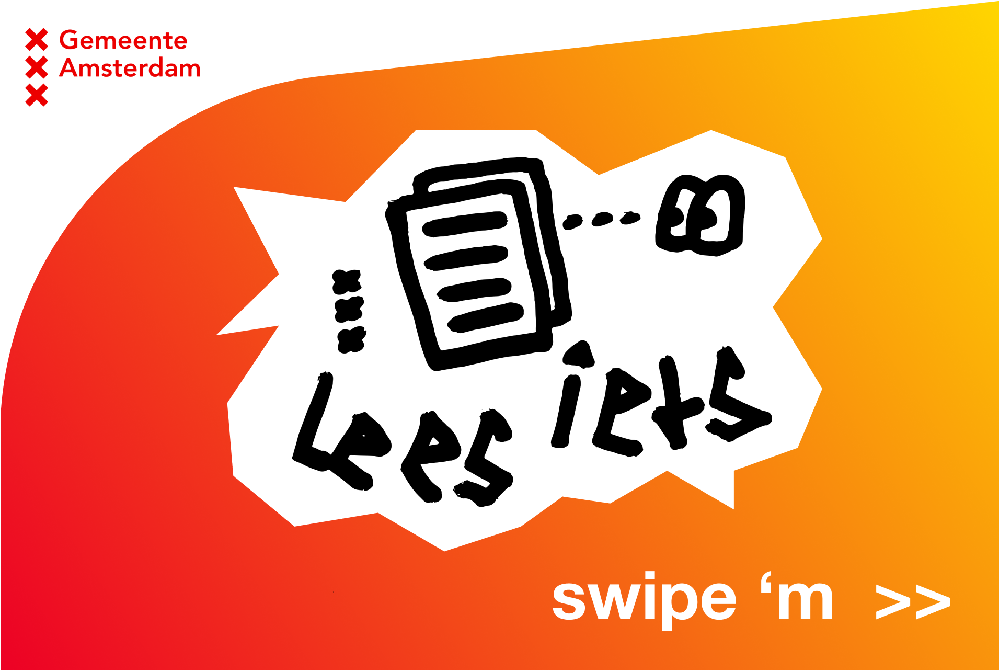
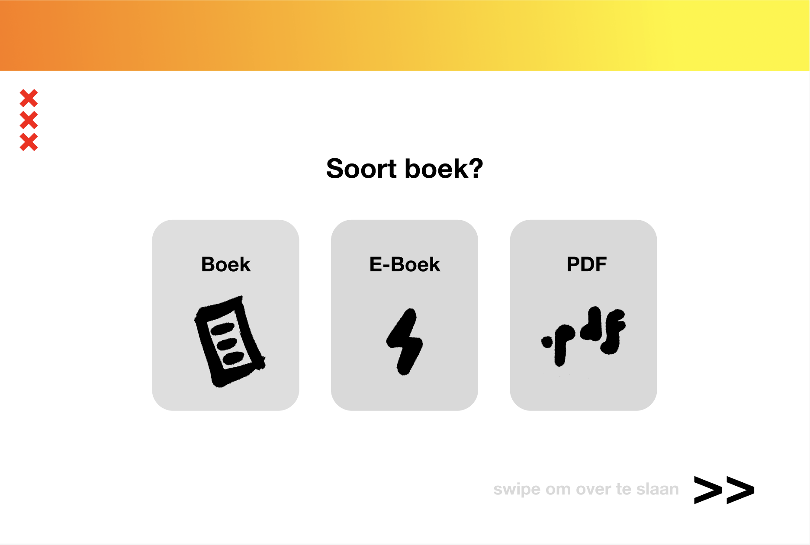
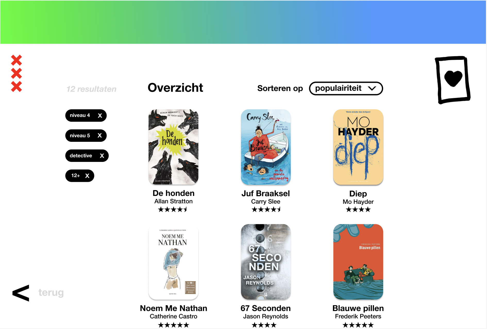
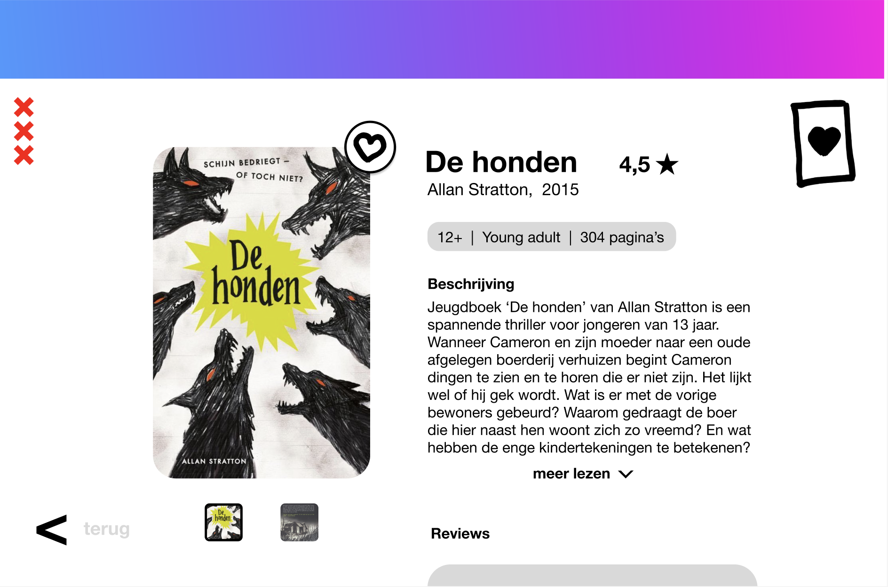
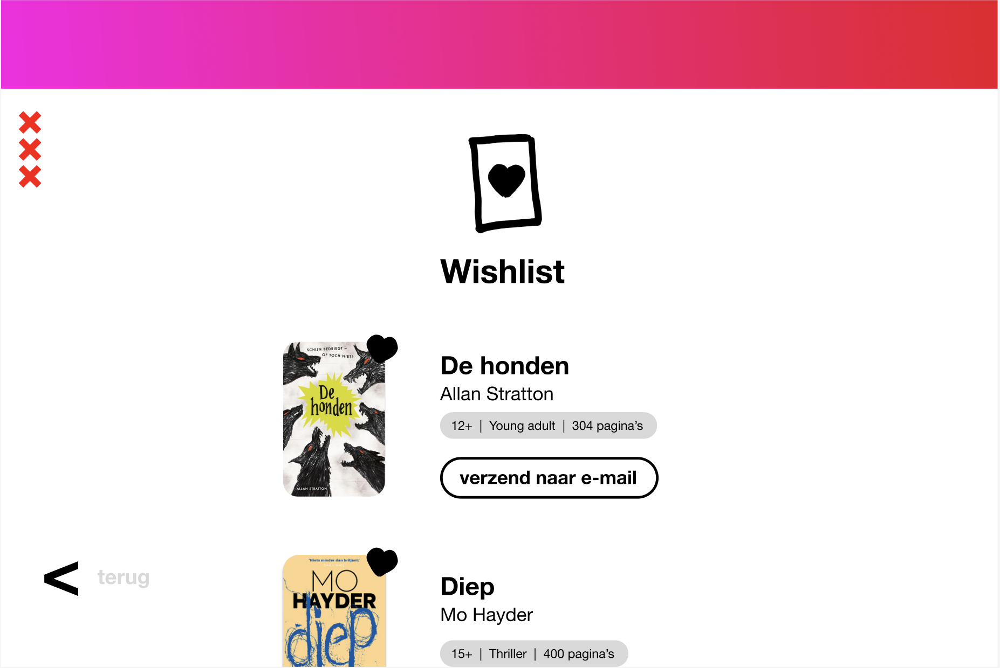
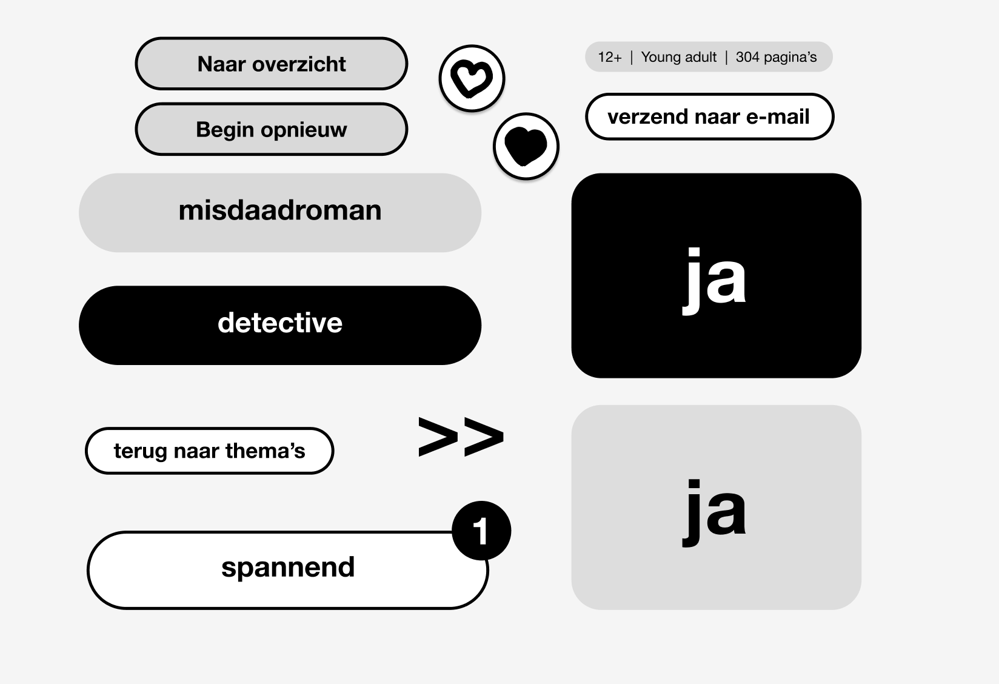

-      
-
Boekenkiezer
Visual Interface Design
In dit project heb ik schermontwerpen voor een Boekenkiezer ontworpen die in Amsterdamse bibliotheken zouden komen te staan. De Boekenkiezer moest in het speciaal jongeren aanspreken met als doel om deze leeftijdsgroep meer aan het lezen te krijgen. Tot de functionaliteiten behoren het zoeken en filteren van boeken en reserveringen versturen naar een email adres.
In mijn ontwerp heb ik mijn doelgroep serieus genomen door niet met een kinderlijke of over-speelse insteek te ontwerpen. Ook heb ik een moderne Tone of Voice en duidelijke taal toegepast om het gebruik zo eenvoudig en herkenbaar mogelijk te maken voor de doelgroep.
In het ontwerp heb ik gebruik gemaakt van meerder vormen van contrast. Op eerste gezicht is het kleurcontrast het duidelijkst, namelijk het gebruik van voornamelijk een zwart-wit content en de progressie balk bovenin met een felgekleurde gradiënt. Maar ook heb ik in de vormen contrast verwerkt door rauwe zelfgemaakte illustraties te laten aftekenen op strakke en ronde vormen met de soepele kleur overgangen.
Dit resulteerde in een ontwerp die voor de juiste doelgroep visueel aantrekkelijk is. Hierdoor worden jongeren op een natuurlijke manier aangetrokken tot het gebruik van de Boekenkiezer en daarmee gemotiveerd om meer te lezen.